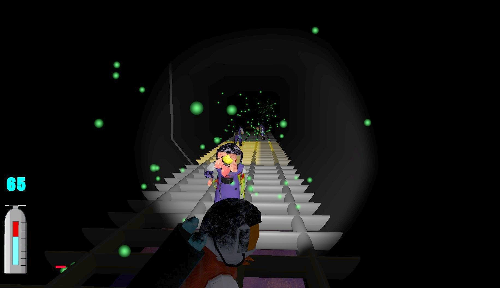
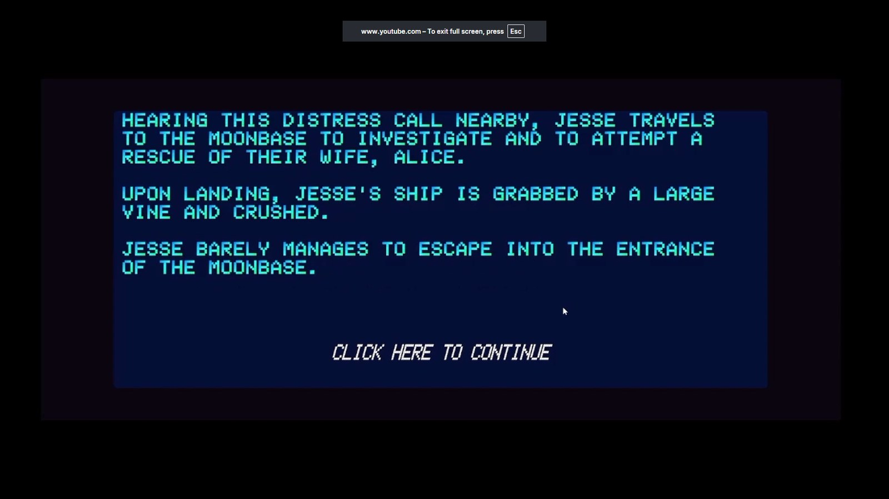
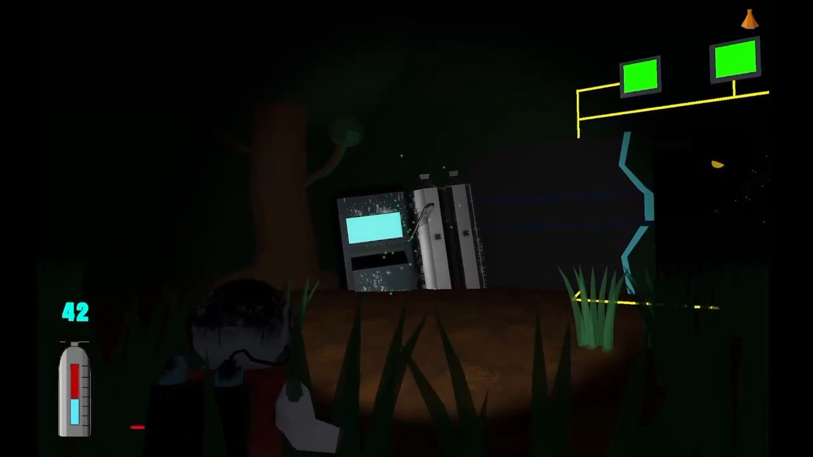
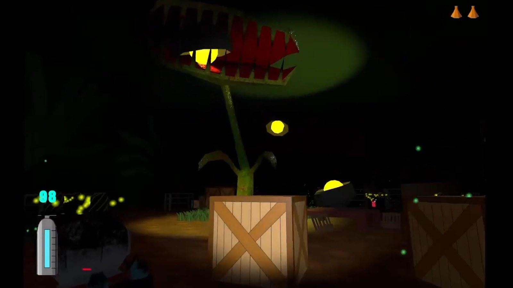
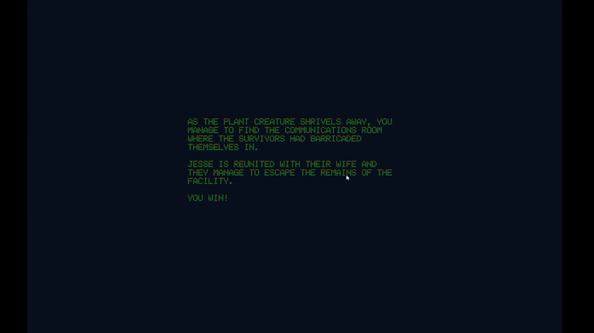

Invasive

Invasive
A short horror game where you explore an abandoned laboratory crawling with... plant monsters?
What I built
- Lead programmer: all C# gameplay code, character movement, animation state, the stealth system, and UI wiring.
- Built the oxygen mechanic that drives the whole game loop: oxygen drains everywhere except near a supply, and the only supplies are checkpoint tanks and the enemies themselves, so survival means approaching what can kill you.
- Programmed the enemy AI, giving each enemy type its own detection and behaviour: vision cones and sound triggering per-enemy chase logic, with contact effects that differ by enemy (instant death or accelerated drain).
- Built the throwable-beaker system (a charge-up throw mechanic and its UI) that lets players distract enemies with noise, required to solve several of the puzzles.
- Authored all model textures in Substance Painter, and integrated the team's audio and animation assets into a working build.
Watch Invasive in motion
Trailer
A short trailer that showcases the basic mechanics.
The Story Behind Invasive

Concept
We settled on horror because it is good practice for building atmosphere and for playing with the player's experience inside an environment. Beyond that we kept the constraints loose, since this was the first 3D game for most of the team. The plant monsters came out of a shared interest in sci-fi horror, and they gave us something to hang the oxygen mechanic on.

How It Works
You arrive at a research station on another planet looking for your spouse, and you lose oxygen anywhere in the station unless you are near a supply. There are only two kinds of supply: the tanks at checkpoints, and the plant-based monsters themselves. That is the whole tension of the game: staying alive means deliberately walking toward the things that can kill you. There is no combat at all. You drain oxygen by sneaking close to an enemy, oxygen hitting zero is instant death, and progress is gated by puzzles built from items, buttons and doors you have to work out.

The Stealth System
Enemies detect the player by vision cone or by sound, and once you are spotted they give chase. Contact is not uniformly fatal: depending on the enemy, being touched either kills you outright or makes your oxygen drain faster. Sound cuts both ways, though, since part of learning the game is learning to use noise deliberately, distracting enemies to get through certain puzzles. The thing that gives you away is also a tool.
The Challenge
The hard part was getting everything to work together. The team was new to game development, so version control was a running problem: one person's changes could break the game for everyone else. Assets also arrived less finished than they needed to be, and integrating them fell to me: wiring in the sounds we had found, getting the right animations firing on the right models, making the pieces behave as one game. In practice it came down to two of us absorbing that work and fixing what we could.

Reception
It was received well. For me the bigger thing was that this was my first 3D game project, and I was happy and grateful to end up with something that was actually a complete, playable game, where every mechanic in it was something I had built myself.